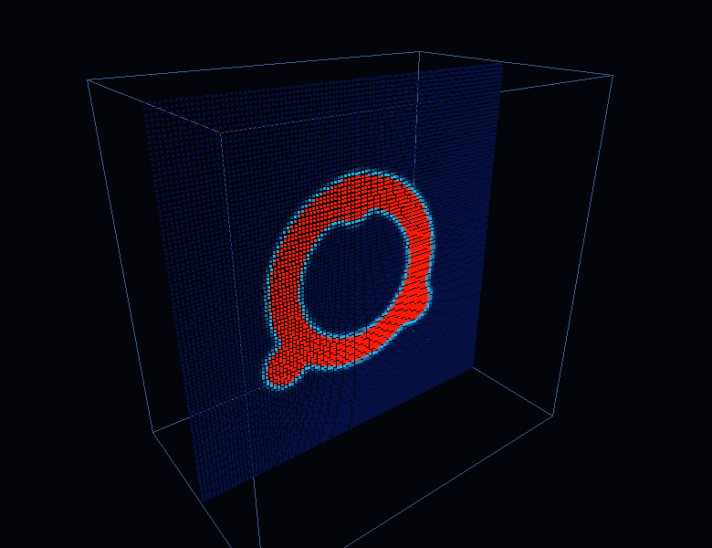

PROJECT / CUDA · GPU COMPUTE
Heat, modeled on the GPU.
I built a CUDA based heat simulation to learn how a GPU can model a changing physical world in parallel. That experiment turned my curiosity toward high performance computing and computer architecture.

THE QUESTION
How does the machine change the model?
Following the heat through a material became a way to explore GPU programming and the relationship between a model and the hardware running it. I’m developing this page alongside the project details and demo.